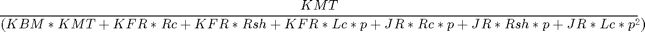

return h=get_param(gcb,'Name') ind=regexp(h,'[0-9]*\.?[0-9]*') blocks='none'; CNT=str2num(h(ind(1)))+1 while ~isempty(blocks) blocks = find_system(gcs,'Type','Block','Name',... [h(1:ind(1)-1) num2str(str2num(h(ind(1)))+CNT)]) CNT=CNT+1 end nn=[h(1:ind(1)-1) num2str(str2num(h(ind(1)))-1)] % set_param(gcb,'MNAME',nn); % set_param(gcb,'Name',nn);
------------------------------------------------------------------------ ----- load numeric raw data ------------------------------------------------------------------------
resp=LTspice2Matlab(FILES{1});
SIGNALS={'V(out_a)','I(out_a)','V(stim)','I(Rshunt)'};
ind=[];
for k=1:length(SIGNALS)
ind{k} = find(~cellfun(@isempty, (strfind(resp.variable_name_list(1,:), SIGNALS{k}))));
end
clrpo=cellfun(@isempty, ind);
ind(clrpo)=[];
SIGNALS(clrpo)=[];
ind = cell2mat(ind);
if isempty(ind)
SIGNALS
error( 'Signals not found' )
else
sig.V = [];
sig.I = [];
for k=1:length(ind)
sig.(SIGNALS{k}(:,1)).(SIGNALS{k}(:,3:end-1)) = resp.variable_mat(ind(k),1:end);
end
end
sig.t=resp.time_vect;
%p=stepoptions;
fn=fieldnames(sig.V);
OFFS=90;
for k=1:length(fn)
sv(k)=figure(OFFS+k);
plot(sig.t, sig.V.(fn{k}));
end
grid on;
legend(fn)
fn=fieldnames(sig.I);
OFFS = OFFS+k+1;
for k=1:length(fn)
si(k)=figure(OFFS+k);
plot(sig.t, sig.I.(fn{k}));
end
grid on;
legend(fn)